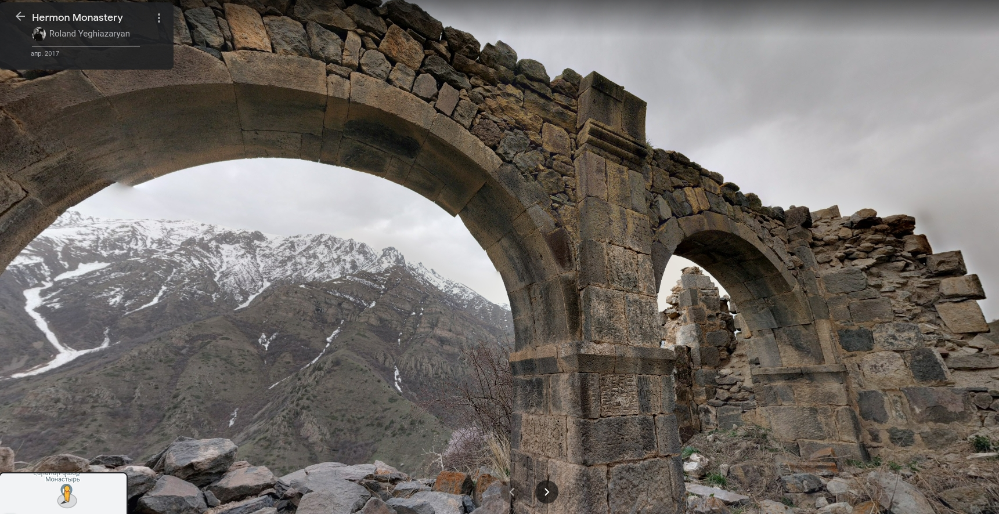
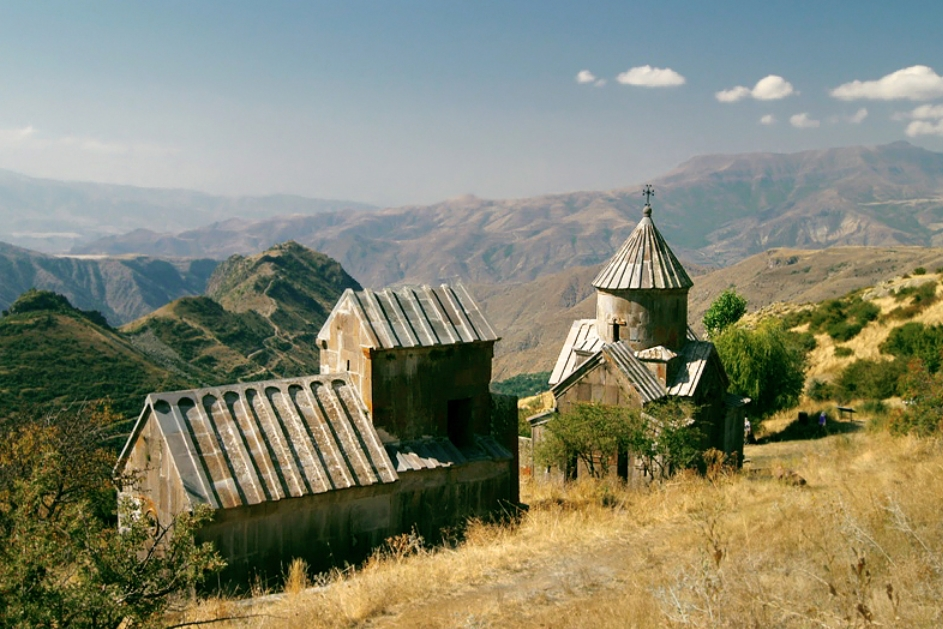
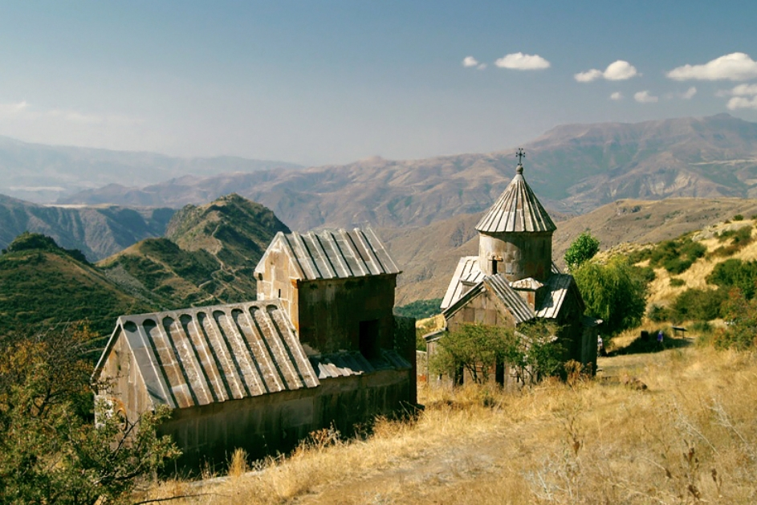
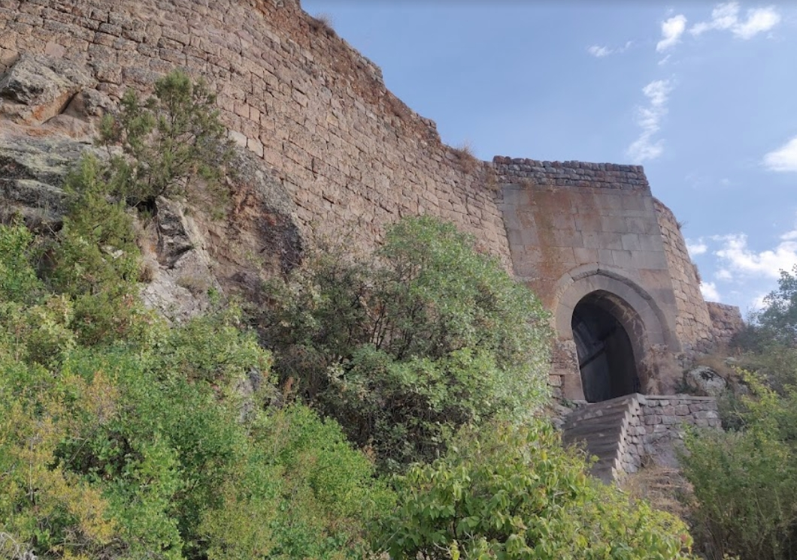
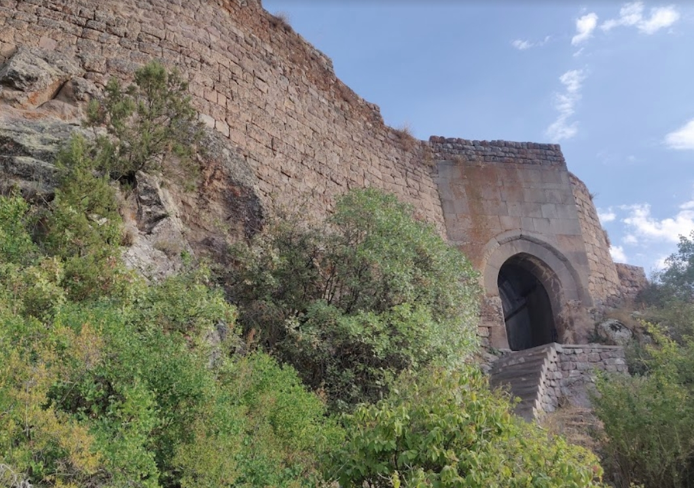
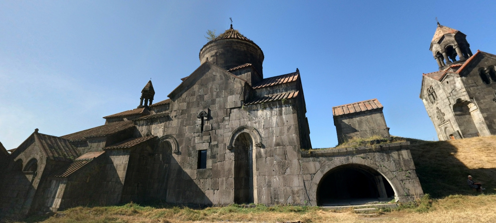
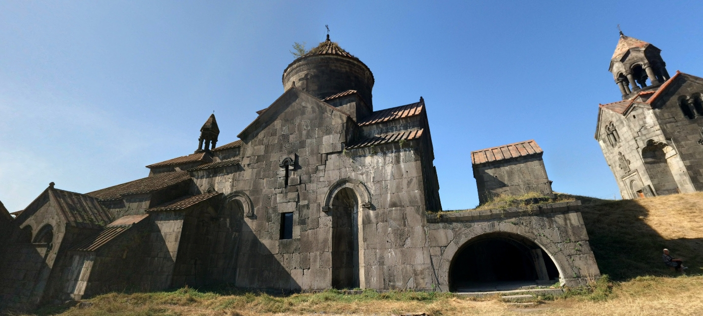

Достопримечательности
39.87514545625838, 45.400829038441884 hermon monastery ; на склоне горы, красивые виды

39.90488403426382, 45.439674967706615 Аратес монастырь
в маленькой деревне
 39.89033010019174, 45.35389886035601 цахац кар ; церковь рядом руины монастыря

39.89033010019174, 45.35389886035601 цахац кар ; церковь рядом руины монастыря

 39.8717361,45.3381139 Смбатаберд крепость ;

39.90172472050096, 45.33219636055198 хорбатех гейзер ;
Видимо, надо ждать, пока взбрыкнёт...
39.8717361,45.3381139 Смбатаберд крепость ;

39.90172472050096, 45.33219636055198 хорбатех гейзер ;
Видимо, надо ждать, пока взбрыкнёт...
 39.82983403223795, 45.36357687448802 spitakavor
(а напротив на вершинке ещё есть крепость Прошаберд, там совсем чуть-чуть осталось, но вершинно-пустынно)
39.82983403223795, 45.36357687448802 spitakavor
(а напротив на вершинке ещё есть крепость Прошаберд, там совсем чуть-чуть осталось, но вершинно-пустынно)
 39.758808163891146, 45.610782867204456 гндеванк ; монастырь 9 века, резьба, на холме на отшибе от деревни
39.817325422143035, 45.63649283895785 минерал гейзер ; у Джермука, булькает, но без фонтана
39.83651360325035, 45.668428677051715 Джермук вдп
(вокруг курортно-культурно)
39.758808163891146, 45.610782867204456 гндеванк ; монастырь 9 века, резьба, на холме на отшибе от деревни
39.817325422143035, 45.63649283895785 минерал гейзер ; у Джермука, булькает, но без фонтана
39.83651360325035, 45.668428677051715 Джермук вдп
(вокруг курортно-культурно)
 40.99476772822477, 44.43838911553152 амракиц ц св николая
Русский модерн, нач. 20 века. Село Амракиц — бывш. Николаевка, основано украинскими казаками в 19 веке.
40.99476772822477, 44.43838911553152 амракиц ц св николая
Русский модерн, нач. 20 века. Село Амракиц — бывш. Николаевка, основано украинскими казаками в 19 веке.
 41.09369261688217, 44.71174317813855 ахпат моастырь

40.50878427795104, 44.43535756861795 петр павел ; через водохранилище от села Кучак
церковь Сурб Погос–Петрос, также известная как церковь Зовуни или Зовунийская церковь[1]) — армянская церковь V века на левом берегу Апаранского водохранилища
может быть под водой
41.09369261688217, 44.71174317813855 ахпат моастырь

40.50878427795104, 44.43535756861795 петр павел ; через водохранилище от села Кучак
церковь Сурб Погос–Петрос, также известная как церковь Зовуни или Зовунийская церковь[1]) — армянская церковь V века на левом берегу Апаранского водохранилища
может быть под водой